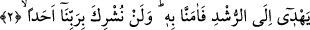

Filozofların ekserisi dış âlemde cinlerin var olabileceğini inkâr ederler ancak onların
ilk dönem mensuplarından büyük bir grup cinlerin varlığını kabul eder. Öte yandan
peygamberleri tasdik eden çeşitli din ve meslek erbâbı da çoğunluk itibariyle aynı
görüşü taşırlar.
Kâşânî der ki: “Varlık âleminde güçlü ve yeryüzünde yaşayan bir takım “nefisler”
vardır. Bunlar canavarların, hayvanların nefislerinin kalınlığında, yoğunluğunda ve
idrâk kıtlığında onlarla aynı değillerdir. Bunlar insanların nefislerinin biçiminde insan
nefsinin biçimlerini ve yeteneklerini de taşımazlar. Bu, kendilerine yeryüzü karakterinin
gâlip hâle geldiği kesif cisimlere bağlanmamaları içindir. Bunlar mücerred nefislerin
saflığında ve letâfetinde de değillerdir. Bundan maksad ulvî âleme bitişme imkânlarının
olmaması, bâzı semâvî cisimlere birleşme ve tecerrüd imkânı bulamamalarıdır. Buna
imkân bulsalardı kendilerine hevâî veya nârî veya duhânî karakterlerin duruma göre
gâlip geldiği latif unsurlara bitişmek sûretiyle semâvi cisimlere bağlanabileceklerdi.
İşte bu nefislere bâzı filozoflar “es-suvar el-muallaka/asılmış, bağlanmış sûretler”
derler.
Bunların bizim ilmimiz ve idrakimizin cinsinden ilimleri ve idrakleri vardır. Bunlar
tabîatları ve yapıları itibariyle semâvi melekûta yakın olduklarından o âlemin bâzı
gaybî bilgilerini alabilmektedirler. Şu hâlde bu sözünü ettiğimiz nefislerin semâya
yükselmeleri ve orada cesedden soyutlanmış nefislerin sözlerini dinleyerek kulak
hırsızlığı yapmaları uzak bir ihtimal değildir. Üzerinde durduğumuz bu nefisler, semâvi
güçlere oranla daha zayıf ve yeryüzü sâkini oldukları için bunlar bu güçlerden
etkilenirler. Dolayısıyla bu tesirle onların seviyesine yükselmemeleri ilimlerinin
boyutuna erememeleri için taşlanırlar. Onların dumansal cisimleri, yıldızların
alevleriyle yanmaları ve tutuşmaları, böylece helâk olmaları ya da semâvi ufka
yükselmelerinin engellenmesi inkâr olunamaz. Açıklamasını yaptığımız bu ruhlar, imkân
dışı şeyler değillerdir, bunların varlığını keşif ve ıyan sâhibi sâdık peygamberler ve
evliyâ haber vermişlerdir. Bilhassa Peygamber Efendimiz (s.a.) bu konuda en
mükemmel bilgiyi veren kişidir.”
Onlar, insan vücudundaki muhayyile, vehm, tefekkür gücü, nazarî ve amelî akıl gücü
ve bâtında gizlendikleri için insan vücûdunun cinleri denilen bütün bâtınî melekelerden
müteşekkil nefsânî kuvvetlerdir.
2. Doğru yola ileten (o Kur’an’a) îman ettik. (Artık) kimseyi Rabbimize asla
ortak koşmayacağız.
Kur’an’ı dinleyen cinler kendi topluluklarına döndükleri zaman kavimlerine:
“Gerçekten biz” hakka, doğruya, din ve dünya işlerinde salâha ileten “harikulâde